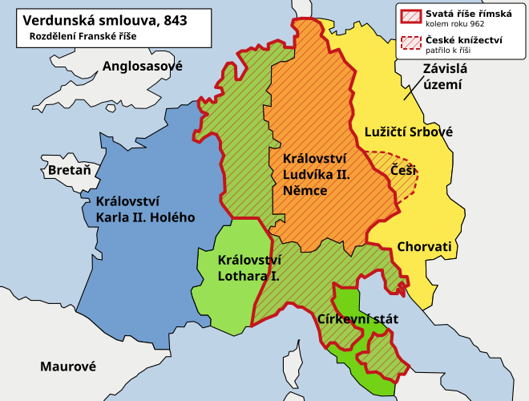
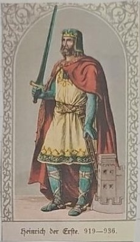
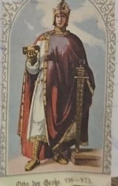
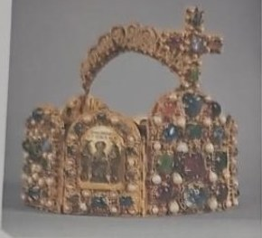

919–1806
Svatá říše římská
Z východní části Franské říše vznikla roku 962 Svatá říše římská, když byl Ota I. korunován císařem. Krále volili kurfiřti, české knížectví bylo součástí říše. Říše zanikla až roku 1806 pod tlakem Napoleona.
Zvýrazněné je v sešitě podtržené.
- 843 Verdunská smlouva: vnuci dělí Franskou říši na tři částii v tématu Franská říše
- 919 Šlechta volí saského vévodu Jindřicha Ptáčníka králem
- 929 Jindřich Ptáčník vtrhl do Čech, kníže Václav platí tribut míru
- 955 Ota I. (s pomocí Boleslava I.) poráží Maďary na řece Lech; Maďaři se usazují v Podunajíi v tématu Uherské království
- 962 Ota I. korunován císařem: vzniká Svatá říše římská
- 1212 Zlatá bula sicilská: dědičný královský titul pro Čechy
- 1356 Zlatá bula Karla IV. určuje sedm kurfiřtů
- 1806 Zánik Svaté říše římské pod tlakem Napoleona; poslední císař František II.
Vznik říše

Mapa: Wikimedia Commons – Christoph S., Wolpertinger, AdolfPorn, licence CC BY-SA 3.0; doplněno vyznačení Svaté říše římské.

Všechny barevné části mapy dohromady tvořily Franskou říši Karla Velikého. Roku 843 si ji jeho tři vnuci rozdělili:
- modrá – západ: Karel Holý → z toho později Francie,
- zelená – střed: Lothar I. → pás od Severního moře do Itálie,
- oranžová – východ: Ludvík Němec → Východofranská říše, z ní později vznikla Svatá říše římská (dnešní Německo).
Žlutá území (i Češi) nepatřila přímo do říše, ale byla na Francích závislá.
Červeně je vyznačena Svatá říše římská kolem roku 962: celý východní díl (Ludvík Němec), k tomu sever Lotharova dílu (Lotrinsko) a severní Itálie. Patřilo k ní i České knížectví (čárkovaně).
Jindřich I. Ptáčník

Na počátku 10. století ve Východofranské říši vymřel rod Karlovců. Říše se pak rozpadla na několik samostatných knížectví a vévodství: každý kraj měl svého vévodu a nikdo nad nimi nevládl.
Roku 919 si místní šlechta zvolila za svého krále saského vévodu Jindřicha Ptáčníka. Proč je to důležité: král už nebyl Karlovec, ale zvolený šlechtou. Volba krále pak v říši zůstala natrvalo (viz kurfiřti níže).
Jindřichovi se podařilo porazit Maďary a uzavřít s nimi příměří. Roku 929 vtrhl do Čech a donutil knížete Václava (svatého Václava) platit poplatek za mír, tzv. tribut míru. Václav tedy každý rok platil, a Jindřich za to Čechy nenapadal. Proč je to důležité: od té doby byly Čechy na říši závislé.
Ota I. Veliký a vznik Svaté říše římské

Po otci Jindřichovi nastoupil na trůn Ota I. Veliký. Roku 955 definitivně porazil Maďary v bitvě na řece Lechu. Vojenskou pomoc mu v bitvě poskytl český kníže Boleslav I. Po této porážce Maďaři s nájezdy přestali (téma Uherské království).
Otovi se podařilo obnovit císařství: navázal na Karla Velikého, který byl korunován císařem roku 800. Roku 962 byl Ota korunován císařem, a tak vznikla Svatá říše římská. Římská proto, že měla navazovat na starou Římskou říši, a svatá, protože císaře korunoval papež.
Kurfiřti: kdo volil krále

Král Svaté říše římské se nedědil, ale byl volen. Volili ho říšští kurfiřti (kurfiřt = kníže volitel). Kurfiřti volí římského krále a je jich 7: tři duchovní a čtyři světští.
| Duchovní | Světští |
|---|---|
| Arcibiskup mohučský | Král český |
| Arcibiskup kolínský | Falckrabě rýnský |
| Arcibiskup trevírský | Vévoda saský |
| Markrabě braniborský |
Proč je to důležité: český král byl jedním ze sedmi kurfiřtů, a měl tedy v říši velký vliv.
Korunování mělo dva kroky:
- Zvolený římský král byl korunován v některé německé katedrále, většinou v Cáchách nebo ve Frankfurtu nad Mohanem.
- Pak jel do Říma, kde ho korunovali císařem.
Pravidla volby kodifikovala Zlatá bula Karla IV. z roku 1356.
České země a říše
České knížectví se stalo součástí Svaté říše římské na počátku 11. století. Mělo ale vlastní panovníky z rodu Přemyslovců.
Prvním českým panovníkem, který se stal římským císařem, byl Karel IV.
Souvislost: roku 1212 potvrdila Zlatá bula sicilská českým panovníkům dědičný královský titul.
Otoni a Sálovci
Rod Oty I. se nazývá otonská dynastie. Po Otovi vládli jeho potomci: Ota II., Ota III. a Jindřich II. Pak otonská dynastie vymřela v mužské linii (nezůstal žádný syn).
Na trůn se pak dostala sálská dynastie. Byla to volba, ale zvolili Sálovce díky příbuzenství v ženské linii: byli s Otony příbuzní přes ženy.
- Císař Jindřich III. Černý se utkal s českým knížetem Břetislavem I.
- Jeho syn Jindřich IV. se proslavil hlavně bojem o investituru s papežem Řehořem VII. a slavnou pokornou cestou do Canossy.
Boj o investituru byl spor, kdo bude vybírat biskupy: císař, nebo papež? Biskupové totiž neměli na starosti jen víru, ale vlastnili i půdu, peníze a vojáky. Kdo je vybíral, měl velkou moc. Papež dal císaře do klatby (vyloučil ho z církve) a šlechtici ho přestali poslouchat. Jindřich IV. proto musel ustoupit a jít za papežem na hrad Canossa prosit o odpuštění. Proto se cestě říká pokorná: mocný císař se musel před papežem ponížit.
Zánik říše
Svatá říše římská zanikla roku 1806 pod tlakem francouzského císaře Napoleona Bonaparta. Trvala tedy přes 800 let (962–1806).
Posledním panovníkem byl František II. Už od roku 1804 používal i titul císaře rakouského pod jménem František I. Proč: věděl, že Svatá říše římská může zaniknout, a chtěl zůstat císařem i potom. Proto má dvě čísla: v Svaté říši římské byl Druhý, v Rakousku První.
Paměťový obraz
- Ptáčník u sítě: Jindřich zvolený šlechtou roku 919.
- Václav s měšcem: roku 929 platí Jindřichovi tribut míru.
- Řeka, koruna a sedm voličů: Ota I. a Boleslav I. porážejí Maďary na Lechu 955, Ota získává císařskou korunu 962; sedm kurfiřtů volí římského krále.
- Bosý císař ve sněhu: Jindřich IV. jde do Canossy za papežem Řehořem VII.
- Napoleon zhasíná svíčku: 1806 konec říše, František II. si nasadí rakouskou korunu jako František I.
Vyzkoušej se
Odpověz nahlas, teprve pak otevři odpověď. Procvičit náhodně
Co se stalo roku 843 a jak to souvisí se Svatou říší římskou?
Franská říše se rozdělila; z východofranské části později vznikla Svatá říše římská.
Co se stalo ve Východofranské říši na počátku 10. století?
Vymřel rod Karlovců a říše se rozpadla na několik samostatných knížectví a vévodství.
Koho si šlechta roku 919 zvolila za krále?
Saského vévodu Jindřicha Ptáčníka.
Co je tribut míru a kdo ho platil?
Poplatek za mír; od roku 929 ho Jindřichu Ptáčníkovi platil český kníže Václav.
Kdo nastoupil na trůn po Jindřichu Ptáčníkovi?
Jeho syn Ota I. Veliký.
Kdo vyhrál bitvu na Lechu roku 955 a kdo mu pomohl?
Ota I. Veliký; vojenskou pomoc mu poskytl český kníže Boleslav I.
Co se stalo v roce 962?
Ota I. byl korunován císařem; vznikla Svatá říše římská.
Kdo volil krále Svaté říše římské?
Říšští kurfiřti.
Kolik bylo kurfiřtů a kdo to byl?
Sedm: tři duchovní (arcibiskup mohučský, kolínský, trevírský) a čtyři světští (český král, falckrabě rýnský, vévoda saský, markrabě braniborský).
Kde se korunovali římští králové a kde císaři?
Králové v německých katedrálách, většinou v Cáchách nebo ve Frankfurtu nad Mohanem; císařem je korunovali v Římě.
Kdy se České knížectví stalo součástí Svaté říše římské?
Na počátku 11. století.
Kdo byl prvním českým panovníkem, který se stal římským císařem?
Karel IV.
Kdy a pod čím tlakem zanikla Svatá říše římská?
Roku 1806 pod tlakem francouzského císaře Napoleona Bonaparta.
Kdo byl posledním panovníkem Svaté říše římské?
František II., od roku 1804 zároveň rakouský císař František I.
Která dynastie vládla po Otonech a jak se dostala na trůn?
Sálská dynastie; volbou, ale díky příbuzenství s Otony v ženské linii.
S kým se utkal císař Jindřich III. Černý?
S českým knížetem Břetislavem I.
Čím se proslavil Jindřich IV.?
Bojem o investituru s papežem Řehořem VII. a pokornou cestou do Canossy.
O co šlo v boji o investituru?
Kdo bude vybírat biskupy: císař, nebo papež.
Co potvrzuje Zlatá bula sicilská z roku 1212?
Dědičný královský titul českých panovníků.
Jak se jmenuje listina Karla IV. z roku 1356?
Zlatá bula Karla IV.